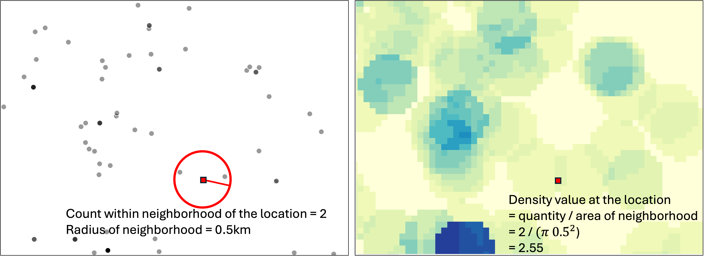
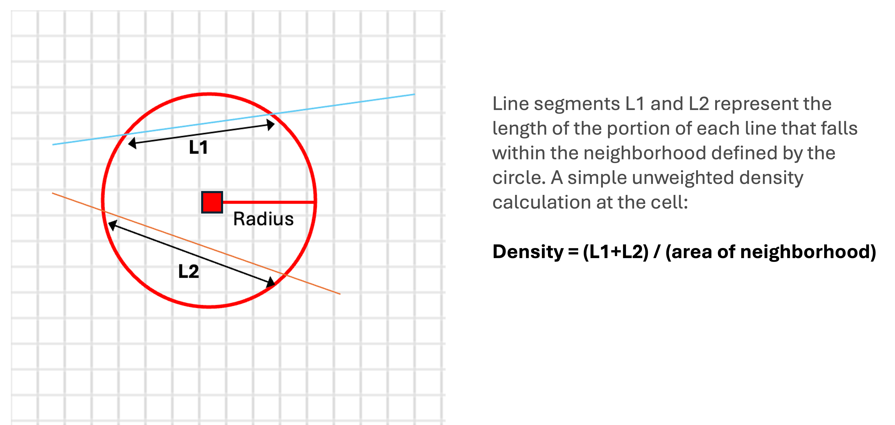

11 Density Analysis
Understand what density analysis is and what it is used for.
Learn how different density analysis methods work.
11.1 Mapping spatial distribution of quantities
Geographic Information Systems (GIS) are widely used to analyze spatial patterns in data. Many datasets represent the distribution of events or quantities across space, such as crime incidents, infectious disease cases, wildfire occurrences, or wildlife sightings.
A common approach is to plot all observation as features on the map. This method is intuitive and often effective for small datasets. However, it becomes less useful as the number of observations increases. When many points overlap, the map can become cluttered and difficult to interpret. In addition, some datasets record counts (e.g., the number of animals observed at a sampled site) or intensities (e.g., wildfire intensity or volume of traffic) at locations rather than single events. In these cases, each location represents an aggregated value rather than a single occurrence, making point symbols inadequate for visualizing variation.
Density analysis can be used to estimate how the density of the phenomenon varies over space. It takes raw observation point or line features as the input and generates a continuous raster surface that represents the spatial variation of density. For every location within the study area (defined by the bounding box of all observations), a density value is calculated for each cell based on the count of observations within a defined neighborhood around that cell location.
A user sets parameters to define the size (and sometimes the shape) of the neighborhood. A circular neighborhood is typically used, and its size is determined by the radius parameter (search radius). In GIS tools for density analysis, a default radius is automatically calculated based on the spatial distribution of input features to balance broader patterns with local details in the output density surface. Alternatively, we can set a specific radius value to reflect the reach of a feature’s influence over space. For example, when mapping tree disease cases, a specified radius can represent how far a pest (e.g., bark beetles) typically travels from an infected tree, helping identify high-risk clusters.
After calculating density values for all cells in the study area, the result is a raster dataset in which cell values represents the spatial variation in density across the entire region. The resulting density surface highlights areas of high concentration (hot spots) and areas with sparse occurrences. The cell size, or spatial resolution, of the output raster can be adjusted: smaller cells (higher spatial resolution) produce a smoother and more detailed density surface. However, changing the cell size does not alter the underlying density pattern, only its level of visual detail.
There are difference density analysis methods available. We will go over some common ones below.
11.2 Point density analysis
This method estimates density over space for point features only, such as crime incidents with location information. To calculate the density at each location as represented as a cell in the output raster, a neighborhood is defined. A commonly used neighborhood shape is a circle formed using a specified radius from the center of the cell. We can use the default radius automatically calculated based on input feature distribution, or we can set a specific radius value to reflect how far a feature exerts influence over. If needed, in point density analysis, we can also define the neighborhood as other shapes such as a wedge (e.g., environmental processes affected by wind) or a rectangle and set the parameters for the dimensions.
To compute density at each cell, only observations within its neighborhood are counted. The cell’s density value is this count divided by the neighborhood area. If observation points come with a field/attribute representing the quantity at these locations (e.g., the number of deer observed at each site) or the intensity (e.g., wildfire intensity), this can be incorporated by summing observations weighted by the quantity or intensity as the count Figure 11.1.

11.3 Line density analysis
When the features are lines, we can use line density analysis to calculate the density of linear features per unit area and generate a density surface Figure 11.2. To calculate the density at each location, GIS calculates which lines intersect with the neighborhood of that cell and sums the total length of the intersecting parts of lines. The cell density value for this location is the total length divided by the area of the neighborhood. GIS uses a circular neighborhood for line density analysis. We can define the size of the circular neighborhood by setting the radius value. If the lines have a field representing quantity or intensity of the lines (e.g., road traffic volume), we can use this field to compute a weighted total length to calculate the density Figure 11.3.


11.4 Kernel density analysis
In point density analysis and line density analysis, we equally weigh all point features that falls within the neighborhood of a cell, or the lengths of line parts that intersect the neighborhood to compute the total quantity (count for points and total length for lines) in the calculation of density. But this does not account for how far a feature is from the location. The limitation is that the output density surface shows abrupt density changes due to presence of individual features (see Figure 11.4 top right panel).
Kernel density analysis uses a kernel function to weigh the features that fall within the neighborhood of each location by how far each feature is from that location. The weight of the feature over space is highest at the location of the point or line and diminishes when moving away from the feature, reaching zero at the neighborhood boundary. The neighborhood is circular and is determined by the radius.
For each location, we calculated the weighted sum of features, instead of a simple count, and then divide it by the area of neighborhood to get the density value. This way, it produces a much smoother density surface than point or line density analysis, without abrupt density change (compare Figure 11.4 top right and bottom right panels). Kernel density analysis is a widely used method to visualize spatial distribution of the quantity of features, producing a smooth and realistic looking density surface.
Note that with the same input features, adjusting the radius that defines the circular neighborhood will change the patterns shown in the output raster. With a smaller radius, the density surface output shows more localized details, while a larger search radius results in a density surface that shows more gradual change and broader and more generalized patterns ( Figure 11.4 bottom panels).

11.5 Space-time kernel density analysis
Traditionally, density analysis focused on two-dimensional distribution patterns over space. In some cases, it is necessary to incorporate time to visualize how features are distributed across both space and time. The tool of space-time kernel density analysis in ArcGIS pro addresses this need, adding a time dimension to the kernel density analysis. It computes the spatiotemporal distribution of time-enabled point features as a multi-dimensional raster – a raster where each cell has multiple values, capturing the density values for sequential temporal intervals. The output can be used to visualize and animate how the distribution of features changes over time.